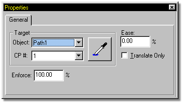

To add an object to a path, click an object in the Choreography window to
select it, then right click the object and select New Constraint >> Path. The
cursor will change to a picker tool with which you can choose a path for the model
to follow.
To add an object to a path, click an object in the Choreography window to
select it, then right click the object and select New Constraint >> Path. The
cursor will change to a picker tool with which you can choose a path for the model
to follow.

The Properties Panel will change to reflect the selection that you make. If you prefer, you can manually select the path the object is to follow from the drop down list.
Right clicking the model name in the Project Workspace also allows you to select the New Constraint >> Path option.
Related Topics:
About Directing
Naming Paths
Selecting a Path
Smooth/Peaked Points in Paths
Add Object to Choreography